这里记录一下我在
下载地址（国内直达）：下载 Android Studio 和应用工具 - Android 开发者 | Android Developers
这里下载的版本是
安装过程很简单，基本上是一路
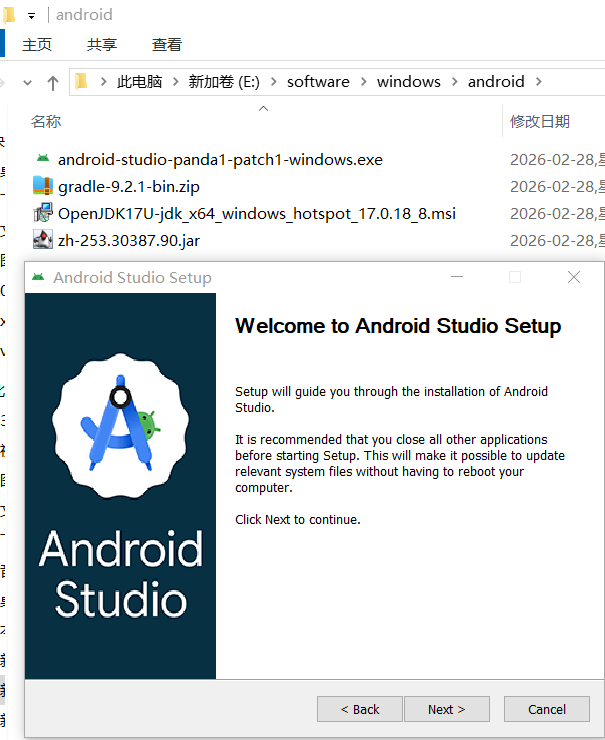
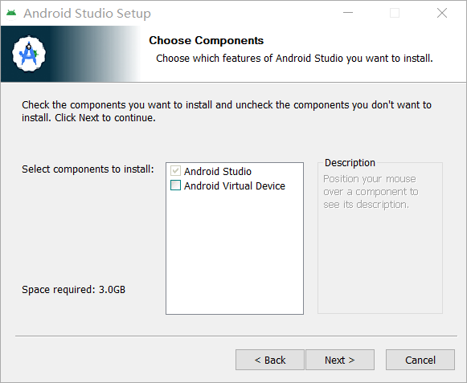
选择安装组件，这里没有勾中“Android Visual Device”
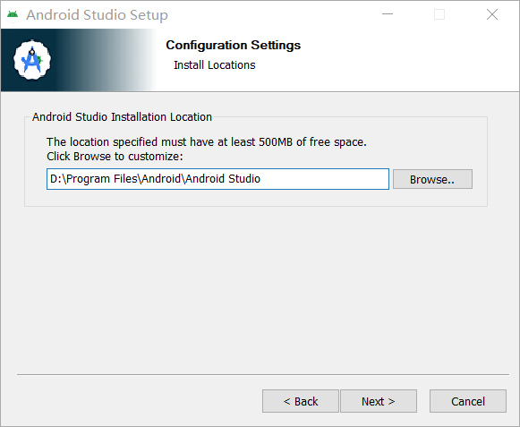
选择一个安装路径，反正我是不把他弄到 C 盘
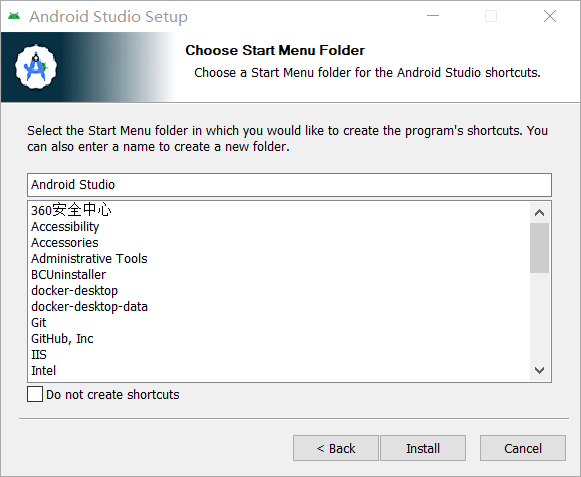
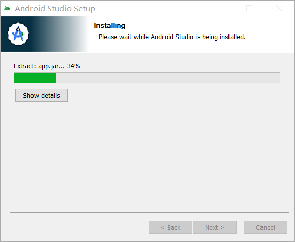
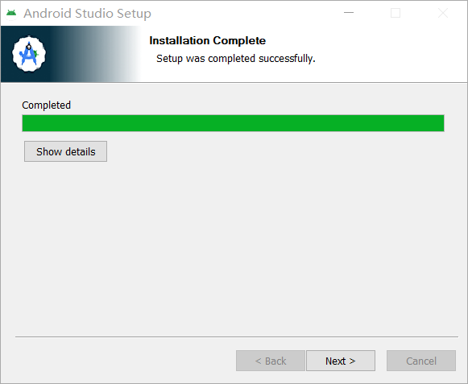
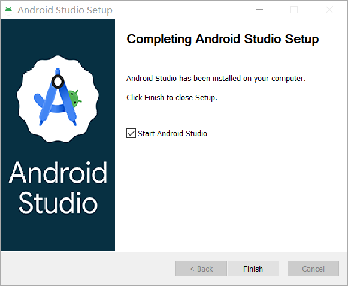
这里点击“Finish”之后，即将首次打开
首次打开会询问你是否设置代理和安装
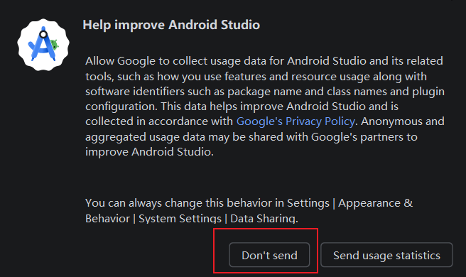
这里点击的是“Don't send”
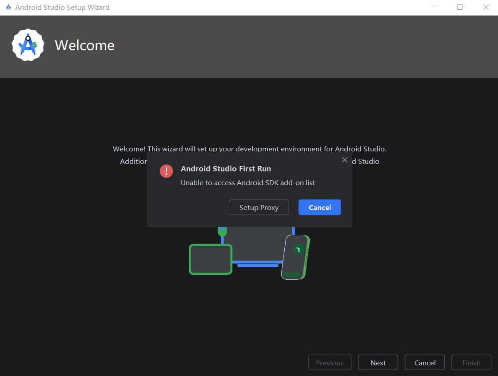
这里点击的是“Cancel”，咱不设置代理，也没有……
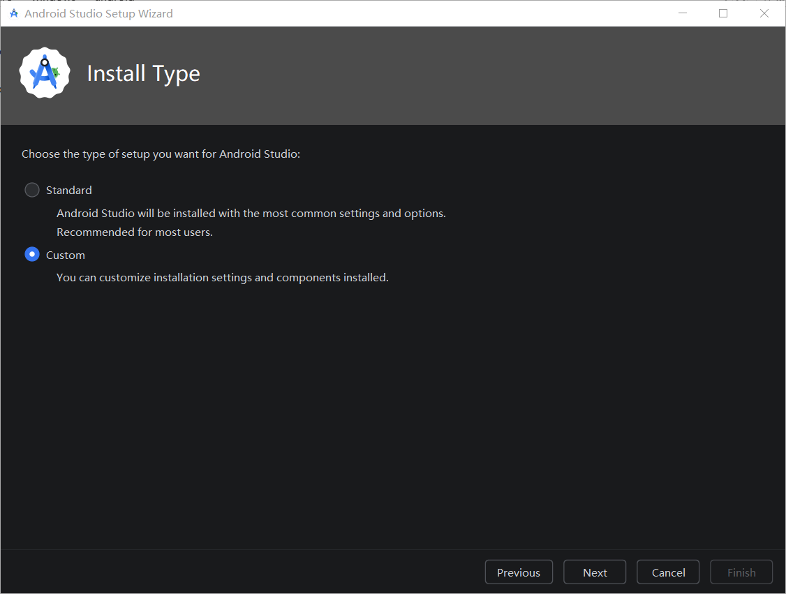
这是重点，安装
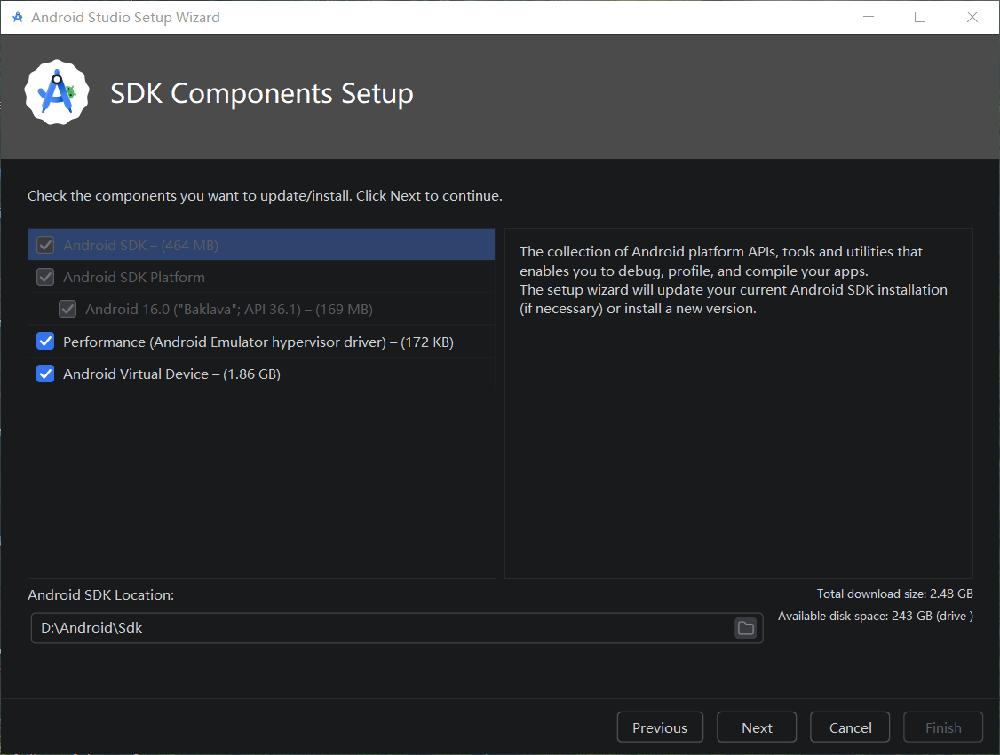
这里的安装路径是
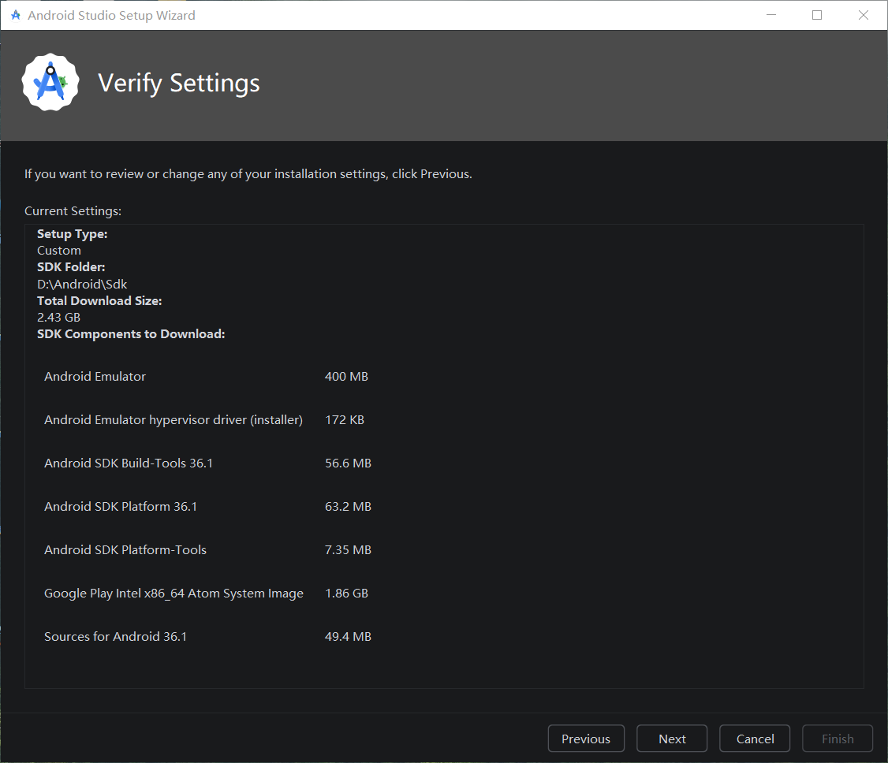
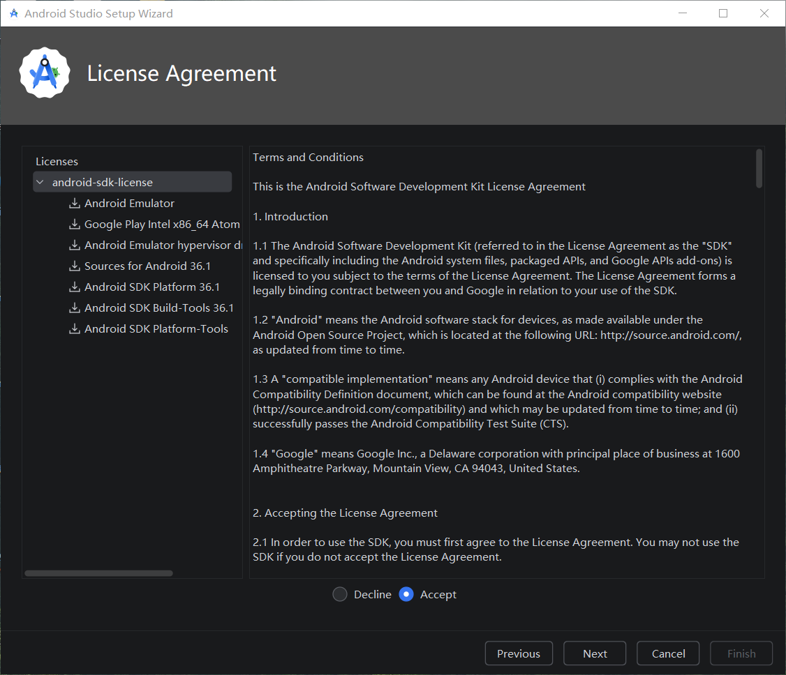
不要忘了选择“Accept”
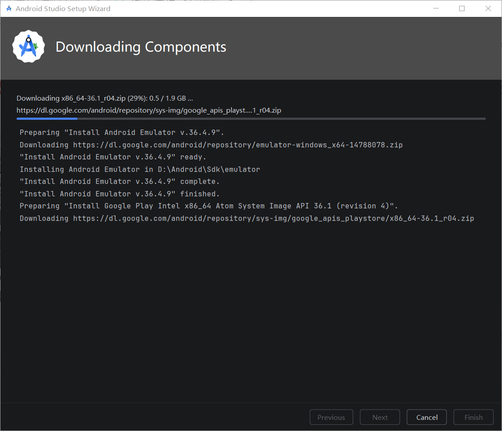
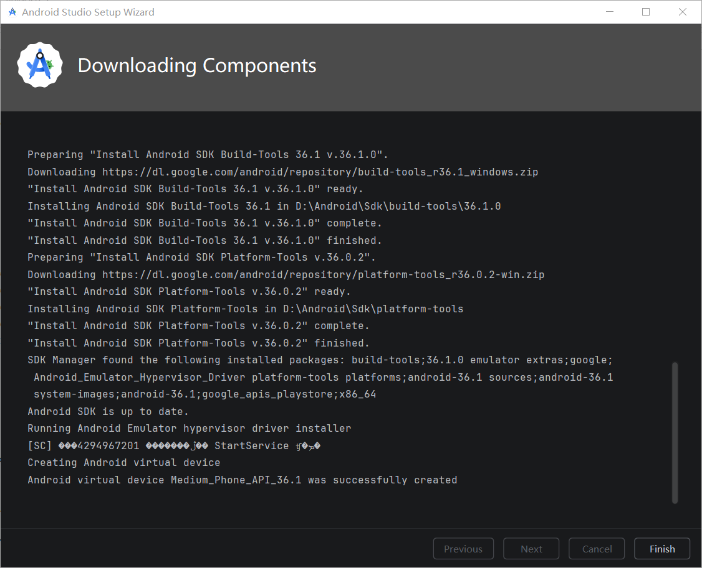
一切顺利，下载完成了。让我感到惊讶的是我应该没有开代理，就这么成功了。一个小小的惊喜。之后点击“Finish”就可以打开
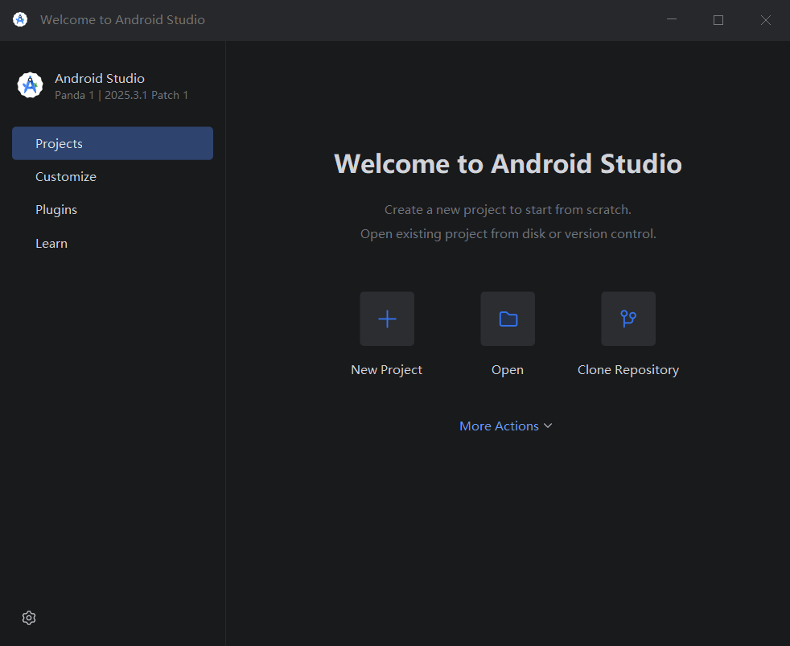